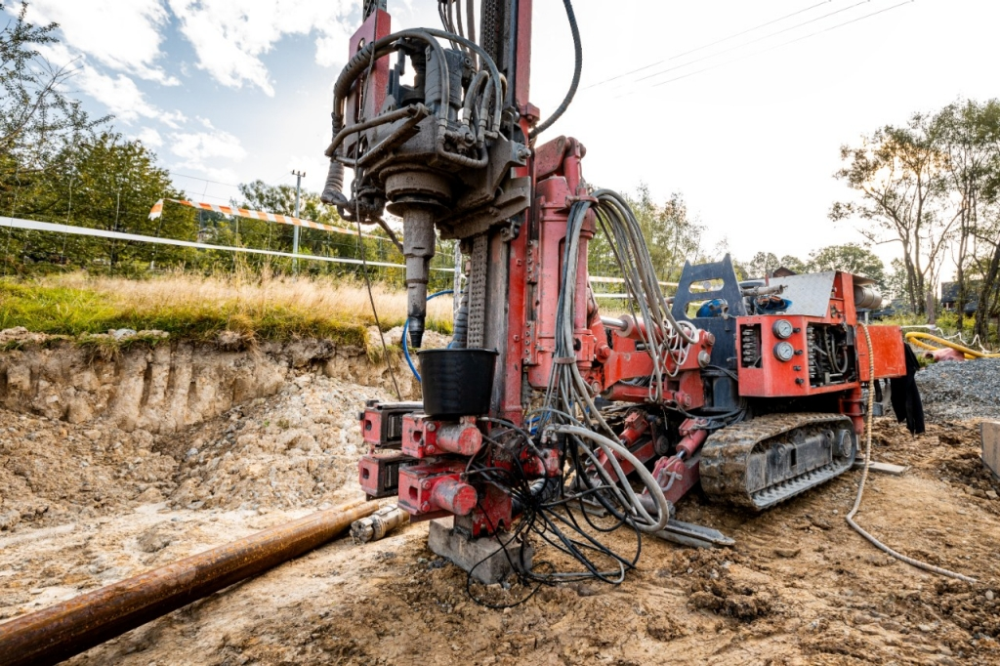
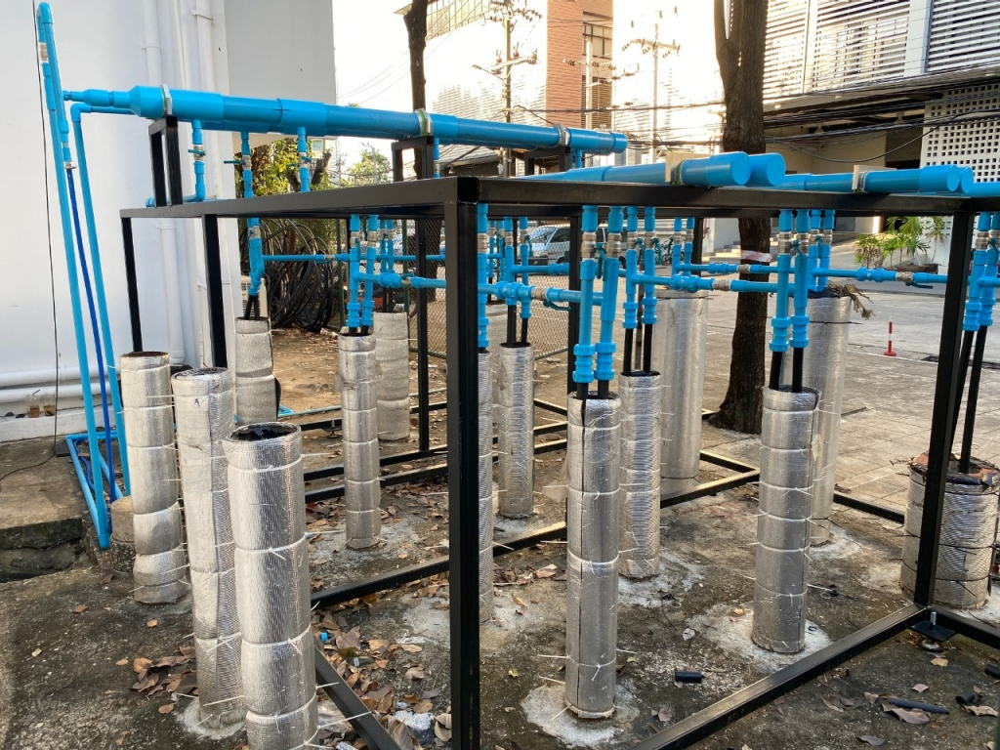
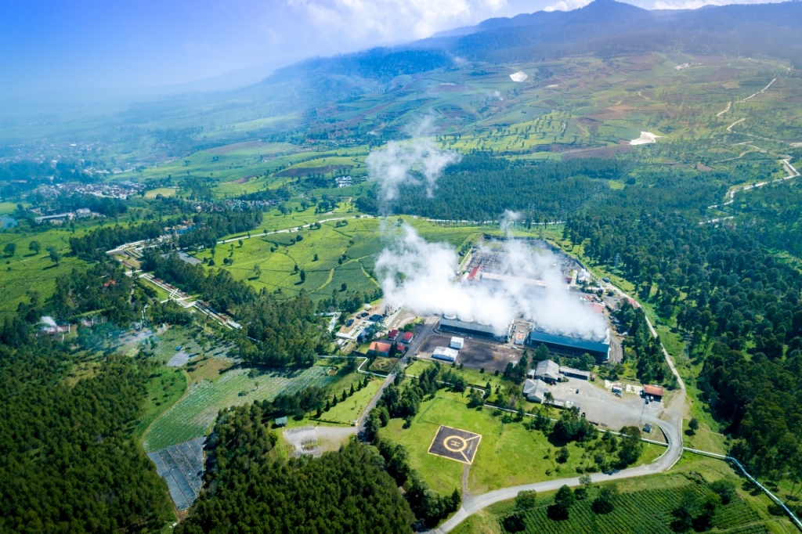

La geotermia es una energía renovable e inagotable que se obtiene al aprovechar el calor del interior de la Tierra, almacenado en rocas, suelos y aguas subterráneas.
Este recurso energético está presente en cualquier geografía, pero solo se puede aprovechar en localizaciones con unas condiciones físicas concretas. En las ubicaciones más favorables se manifiesta de forma natural, algunos de los ejemplos de energía geotérmica son: las fuentes termales, géiseres o volcanes.
Esta fuente de energía primaria renovable es una pieza clave en la senda hacia la descarbonización, ya que puede cubrir una parte importante de la demanda de climatización y electricidad de nuestros edificios e industrias. Para que nos hagamos una idea, una planta geotérmica de unos 10 MW es capaz de producir anualmente la energía que necesitan más de 23.000 viviendas y su uso evitaría la emisión de unas 57.000 toneladas de CO2 cada año.
¿Cómo se obtiene y cómo funciona la energía geotérmica?
La tierra está formada por diferentes estratos o capas rocosas desde el centro hasta el exterior. Su núcleo es una masa sólida e incandescente compuesta de minerales, gases y rocas fundidas. Cuando el agua de la lluvia se filtra a través de la corteza terrestre, forma mantos, corrientes de aguas profundas y acuíferos confinados. Estos, al entrar en contacto con las altas temperaturas del subsuelo dan lugar a un reservorio geotérmico formado por agua y vapor a elevadas temperaturas.
A continuación, vamos a ver cómo se obtiene este preciado recurso natural:
Perforación:
Con el fin de acceder a esa fuente de agua caliente del subsuelo, es necesario localizar y perforar la zona adecuada. Estas perforaciones suelen tener entre 10 y 15 centímetros de diámetro y su profundidad depende de las condiciones físicas y geológicas de la zona.
Extracción:
A continuación se introducen sondas geotérmicas en forma de tuberías. Estas contienen agua o líquido anticongelante que al descender a las zonas más profundas se calienta y vuelve a subir accionando una bomba donde se produce el intercambio de calor.
Producción:
Para transformar la energía calorífica en electricidad es necesario instalar sobre el yacimiento una planta geotérmica que recoja el fluido natural (agua y vapor) y los transforme en energía cinética, mediante el uso de una turbina. Generalmente, el agua y el vapor se separan.
El vapor generado en todo este proceso se conduce a través de una red de tuberías para producir energía térmica o eléctrica. Por su parte, el agua se puede utilizar de forma directa como agua sanitaria o calefacción para la vivienda. Tras su uso, vuelve a canalizarse hacia el subsuelo. Gracias a las últimas tecnologías, el fluido circula en todo momento por un circuito cerrado, sin emisión alguna de gases a la atmósfera, y, cuando se enfría, se devuelve al subsuelo convertido en agua donde capta de nuevo el calor.

Se espera que el tamaño del mercado de energía geotérmica en términos de base instalada crezca de 15,68 gigavatios en 2024 a 17,91 gigavatios en 2029, a una tasa compuesta anual del 2,69% durante el período previsto (2024-2029).
Source:https://www.mordorintelligence.com/es/industry-reports/geothermal-energy-market

El tamaño del mercado de energía solar en Colombia, en términos de capacidad instalada, se espera que crezca de 2,28 gigavatios en 2025 a 19,80 gigavatios para 2030, con una tasa de crecimiento anual compuesta (CAGR) del 54,07% durante el período de pronóstico (2025-2030).
Source: https://www.mordorintelligence.com/industry-reports/colombia-solar-energy-market